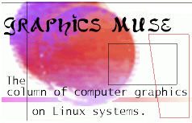

Copyright © 1996 Specialized Systems Consultants, Inc.
For information regarding copying and distribution of this material see the
Copying License.
Table of Contents Issue #12
|
 |

|
TWDT 1 (text)
TWDT 2 (HTML)
are files containing the entire issue: one in text format, one in HTML.
They are provided
strictly as a way to save the contents as one file for later printing in
the format of your choice;
there is no guarantee of working links in the HTML version. Our thanks
go to Tushar Teredesai for pasting together the HTML version.
Got any great ideas for improvements! Send your comments, criticisms, suggestions and ideas.
This page written and maintained by the Editor of Linux Gazette, gazette@linuxgazette.net